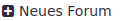
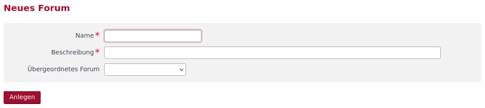
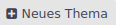
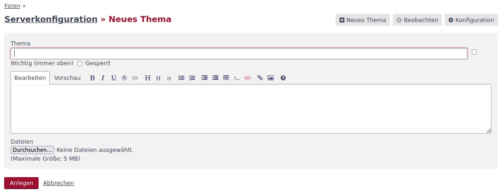
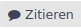
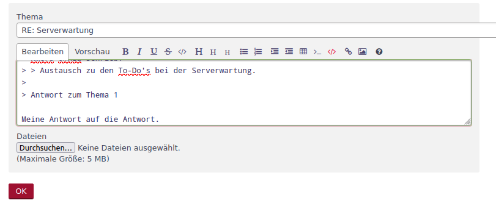
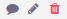

Foren
Im Rahmen des Informationssicherheitsmanagements ist der Gesprächs- und Diskussionsbedarf innerhalb der Organisation in der Regel recht hoch. Um den Informationsaustausch auch asynchron zu ermöglichen, gibt es in xmera Omnia Diskussionsforen.
Forum anlegen
Foren werden in der Objektkonfiguration angelegt nachdem das Modul aktiviert wurde.

Über den Button  wird die Erfassungsmaske für ein neues Forum geöffnet.

Der Name des Forum sowie die Beschreibung des Forum sind Pflichteingaben. Ein Forum kann auch einem bestehenden Forum untergeordnet werden.
Im Forum arbeiten
Sobald mindestens ein Forum in der Objektkonfiguration vorhanden ist, wird der Menüpunkt Forum im Objektmenü angezeigt. Mit einem Klick wird die Liste der Foren angezeigt. Durch einen Klick auf ein Forumelement werden die dort behandelten Themen angezeigt.
Thema anlegen
Durch den Klick auf den Button  wird die Maske zur Erstellung eines Themas geöffnet.

Hier wird das Thema mit der Themenbeschreibung festgelegt. Über die Auswahlfelder _Wichtig (immer oben) wird das Thema als oberstes gesetzt. Über das Auswahlfeld Gesperrt wird die Bearbeitung des Forums für andere Nutzer (trotz der Rechte ein Forum zu bearbeiten). Mit OK wird das Thema erstellt.
Über die Button oberhalb des Themas besteht die Möglichkeit die Beobachtung für das Thema ein- bzw. auszuschalten, eine Antwort mit Zitierung der Themenbeschreibung, das Thema zu bearbeiten oder auch zu löschen.
Auf einen Beitrag antworten
Zum einen besteht die Möglichkeit über den Button  eine Antwort mit Zitat des letzten Beitrags zu erstellen. Zum anderen kann unterhalb des Themas oder der Themenantworten ein Formular für eine neue Antwort geöffnet werden.

Mit OK wird die Antwort übernommen. Über die Button  kann die Antwort zitiert, bearbeitet oder gelöscht werden.